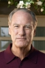
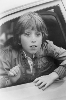

Country:United States, 114 minutes
Spoken languages:English
Genres:Horror
Director(s):Tobe Hooper
Writer(s):Steven Spielberg, Michael Grais, Mark Victor
Video Codec:Unknown
Number: 936


Certification:PG
Storyline:
Steve Freeling lives with his wife, Diane, and their three children, Dana, Robbie, and Carol Anne, in Southern California where he sells houses for the company that built the neighborhood. It starts with just a few odd occurrences, such as broken dishes and furniture moving around by itself. However, when he realizes that something truly evil haunts his home, Steve calls in a team of parapsychologists led by Dr. Lesh to help before it's too late.
Cast:  
Medium: Original DVD,
Loaned: No
Aspect ratio: Unknown